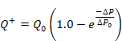

CONTAM 实现自调节通风口，如 [ 阿克斯利 2001 ] 。该元件限制通过具有用户定义的限制气压差的流路的两个方向的气流速率。
流量根据以下公式计算元件上的正压差和负压差。为每个气流路径设置正流向。

姓名： 输入要用于识别气流元件的名称。气流元件将保存在当前项目中，并且可以与多个气流路径关联。
最大流量（ Q0): 设置允许通过气流路径的最大气流速率的经验值。
调节压力（ DP0): 代表近似压差的经验值，高于该压差气流将被限制为最大流量 Q0.
逆流分数 ( f): 当气流路径上的压差为负时，通过该元件的气流将被限制到的最大流量的分数。
说明： 您可以提供更详细的注释来描述此气流元件。